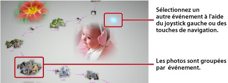

Affichage de photos
Lorsque vous démarrez Photo Gallery, toutes les photos sauvegardées dans le stockage système du système PS3™sont automatiquement analysées et groupées par événements. Les photos sont groupées dans des événements selon la date et l'heure de prise de vue.
Sélection d'événements
Passez d'une photo à l'autre ou d'un événement à l'autre à l'aide du joystick gauche ou des touches de navigation. Vous pouvez sélectionner plusieurs photos ou événements en appuyant sur la touche  pour chaque sélection.
pour chaque sélection.

Modification de l'affichage des photos
Pour modifier l'affichage des photos, sélectionnez des groupes et des événements, puis appuyez sur la touche  . L'affichage change comme illustré dans les images suivantes. Pour revenir à un affichage précédent, appuyez sur la touche
. L'affichage change comme illustré dans les images suivantes. Pour revenir à un affichage précédent, appuyez sur la touche  .
.
Conseil
Lorsqu'une photo est affichée en mode plein écran, vous pouvez accéder au panneau de configuration utilisé sous la catégorie  (Photo) dans l'écran XMB™ en appuyant sur la touche
(Photo) dans l'écran XMB™ en appuyant sur la touche  . Vous pouvez ensuite utiliser les options du panneau de configuration disponibles sur la photo affichée.
. Vous pouvez ensuite utiliser les options du panneau de configuration disponibles sur la photo affichée.
Affichage de photos en diaporama
Pour afficher un diaporama de vos photos, sélectionnez une liste de lecture ou un événement dans [Espace bibliothèque], appuyez sur la touche , puis sélectionnez  (Diaporama). Depuis l'écran affiché, définissez les options du diaporama décrites ci-dessous, puis sélectionnez [Démarrer].
(Diaporama). Depuis l'écran affiché, définissez les options du diaporama décrites ci-dessous, puis sélectionnez [Démarrer].
| Style du diaporama | Pour sélectionner le mode d'affichage des photos dans le diaporama. |
|---|---|
| Vitesse diaporama | Pour sélectionner la cadence du diaporama. |
| Trier | Pour sélectionner l'ordre d'affichage des photos. |
| Musique du diaporama | Pour sélectionner la musique de fond durant le diaporama, parmi le contenu audio fourni avec l'application Photo Gallery. |
 |
Pour sélectionner la musique de fond durant le diaporama, à partir de la catégorie  (Musique) dans l'écran XMB™. (Musique) dans l'écran XMB™. |
Conseils
- Durant un diaporama, vous pouvez accéder au panneau de configuration pour la catégorie (Photo) en appuyant sur la touche . Vous pouvez ensuite utiliser les options du panneau de configuration disponibles dans le diaporama.
- Lorsque des photos sont affichées dans [Espace bibliothèque], vous pouvez sélectionner [Similarité] sous [Trier] pour définir l'ordre des photos en fonction de la similarité des images.
Modification de la musique de fond
Vous pouvez modifier la musique de fond pendant que vous visionnez vos photos. Appuyez sur la touche PS sur la manette sans fil pour afficher l'écran XMB™, accédez à (Musique), puis sélectionnez le fichier audio que vous souhaitez lire.
Conseils
- Pour modifier la musique de fond d'un diaporama, sélectionnez la musique que vous souhaitez écouter avant de démarrer le diaporama.
- Pendant l'utilisation de Photo Gallery, si vous sélectionnez une piste de musique qui est enregistrée sur le support de stockage comme musique de fond, et si ensuite vous démarrez le diaporama, il se peut que la piste ne puisse pas être relue une fois le diaporama terminé.